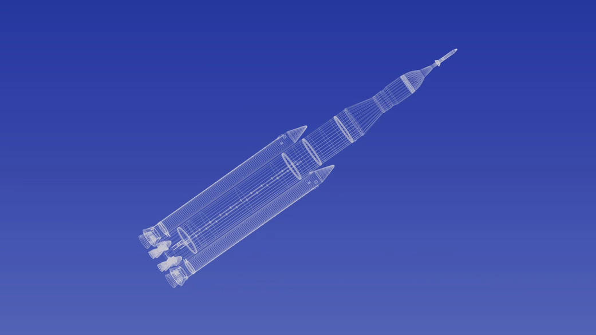
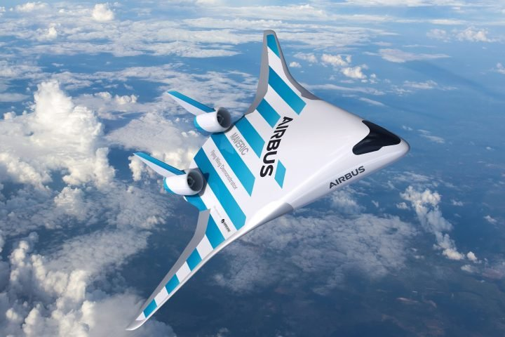
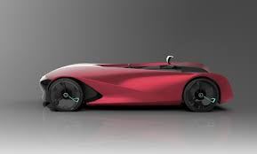
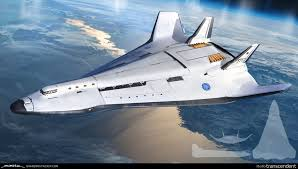
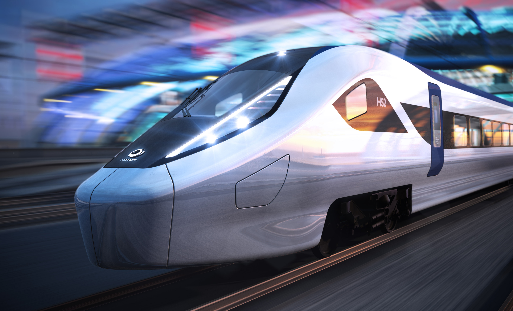
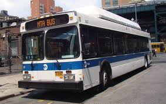

Latest News
November 18, 2020
 You start creating rocket designs. You work from a blank sheet of paper. In fact, you get a lot of blank sheets of paper. Reams of paper, really. The challenge, it turns out, is not to design a rocket capable of supporting human missions to Mars. The challenge is designing the BEST rocket for the mission.
November 19, 2020
 The aircraft design process is a loosely defined method used to balance many competing and demanding requirements to produce an aircraft that is strong, lightweight, economical and can carry an adequate payload while being sufficiently reliable to safely fly for the design life of the aircraft.
November 19, 2020
 Automotive design is the process of developing the appearance, and to some extent the ergonomics, of motor vehicles. First, it is a matter of understanding the future vehicle and the context in which it will be driven. BMW’s designers initially express their ideas in countless hand-drawn sketches. These models are made from clay.
November 19, 2020
 During the early shuttle studies, there was a debate over the optimal shuttle design that best balanced capability, development cost, and operational cost. Initially a fully reusable design was preferred. This involved a very large winged manned booster which would carry a smaller winged manned orbiter.
November 19, 2020
 Train design is the foundation of successful service, affecting everything from travel time to cost to passenger experience. The train equipment itself affects everything that matters to both riders and operators: comfort, speed, safety, operating costs, ridership and revenue. Design is very important to shape the future of trains.
November 19, 2020
 For the last few months, we’ve been diligently working to completely redraw the Queens Bus Network to create a faster, more reliable system of interconnected routes. To do this, we wiped the map clean and started from scratch, which means there are a lot of changes proposed in this proposed Draft Plan.